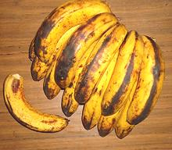

SAFARI
Users
General & History
Bananas were one of the earliest agricultural crops, starting about 10,000 years ago in Southeast Asia. Taken from there to Africa and from Africa to Central and South America, it is now an important crop throughout the tropical areas of the world. The name "banana" is African.
Bananas are the world's most popular fruit. Even in the U.S. where bananas are not grown, the average person, in a year, eats 10 pounds more bananas than apples. Bananas are currently the 4th most important source of nutrition for the world's population, following only rice, wheat and corn.
Scientific naming of bananas has been highly confusing because the scientists have been highly confused. The former species name Musca paradisiaca was particularly confused and has been abandoned. For clarity, a letter code has been instituted (see below).
Developing new varieties of banana is very frustrating, especially since all the successful commercial varieties are sterile. In fact, the frustration of endless failures drove one prominent developer to suicide.
Buying & Storing Bananas
Bananas are generally sold slightly unripe, which is fine because they are more durable that way and ripen well at room temperature. Avoid bruised fruit and bananas that are all green - they may not ripen well - cooking bananas like plantains are the exception. Different recipes will call for them all green through yellow to black.
Do not refrigerate bananas or expose them to extreme temperatures or they will not ripen properly. When ripe, they can be refrigerated for a couple days to prevent them from becoming mushy. The skins turn brown when refrigerated but this does not affect the flesh.
Store bananas away from other fruits unless you want those fruit to ripen more quickly. Bananas exude a lot of ethylene gas which causes fruit to ripen.
Varieties
Wild Bananas
 [Gluay pa (Thai - forest banana); Musa acuminata ("noble
banana", A group), Musa balbisiana ("humble banana", B group)]
[Gluay pa (Thai - forest banana); Musa acuminata ("noble
banana", A group), Musa balbisiana ("humble banana", B group)]
Wild bananas are not sterile like commercial bananas so are filled with
hard seeds about 1/4 inch diameter. These are now uncommon even in their
native Southeast Asia, but are of extreme importance to banana breeders
who are developing a successor to the Cavendish, against the inevitable
day when it will succumb to disease.
Photo by Warut Roonguthai distributed under license
Creative Commons
Attribution-Share Alike v3.0 Unported.
Commercial Bananas
[Musa acuminata, Musa balbisiana, and Musa acuminata x balbisiana (all previously Musa paradisiaca and other names)] All commercial seedless bananas are either polyploids (sterile genetic diploids, triploids or tetraploids) of one of the two species listed above, or are hybrids of the two. They are given letter designations from the first letters of the two species. The old name paradisiaca was rather confused and has been dropped.
Baby Banana
- See Niño BananaBlue Java
[Hawaiian Banana, Ice Cream Banana; (ABB group)]
A banana with a blue-green peel when unripe, yellow when ripe, and
covering a sweet creamy flesh. These are popular in Hawaii, but I have yet
to see any of them in Southern California.
Photo by Forest &
Kim Starr distributed under license
Creative Commons
Attribution ShareAlike v3.0 attribution required.
Burro
This banana is now fairly available in Southern California particularly in ethnic groceries. It's short, rather squarish in cross section and more flavorful than the Cavendish. They are noted for a hint of lemon in the flavor. They look very like the Philippine Saba banana, but apparently are different and much less sweet.
Cavendish
[Chiquita Banana, Grand Nain; Musa acuminata (AAA group)]
This is your supermarket banana, grown on huge plantations of genetically identical plants to support a $4 billion export market. It is not the best tasting banana but holds its dominant position by convenience of storage and shipping. It is ripe when it shows a few small black spots on the peel. These bananas run between 7 and 8 inches long, (not counting the stem), 1-5/8 inches across and typically weigh between 6-1/2 and 7-1/2 ounces A 6-7/8 ounce banana was 4-7/8 ounces after peeling for a yield of 70%. Smaller bananas yield less.
The Cavendish is propagated by root suckers. It's a sterile seedless banana producing neither pollen nor seed, Every plant is an offshoot of one single original plant. This lack of diversity places the crop at great risk of disease and there's no way to breed disease resistance.
Currently the black sigatoka fungus is a major problem and airborne
spraying is the only defense, accounting for a full 20% of the cost of
growing bananas. A soil bacteria called Tropical Race 4 also now threatens
the Cavendish, just as a previous variety wiped out its commercial predecessor,
Gros Michel. Prepare at least for higher prices and
the possible disappearance of the familiar seedless dessert banana.
East African Highlands Banana
[EAHB; Ndizi (Swahili); Matooke, Amatooke, Ekitookye, Ekitooke (Uganda); Ikitoke (Rwanda); Musa acuminata (AAA-EA group or Mutika/Lujugira subgroup)]
Not sold in North America, but one of the most important food crops in
Uganda, Tanzania, Burundi, and Rwanda. The dish of steamed bananas called
matoke is synonymous with "food" in Uganda.
Photo by Julienls distributed under license Creative Commons
Attribution ShareAlike v3.0.
Fe'i Bananas
[Pisang Tongkat Langit (Moluccas); Musa x troglodytarum]
This unique banana is cultivated in the South Pacific islands, from
the Moluccas east to French Polynesia, south to New Caledonia and north
to the Federated States of Micronesia. Some are also grown on Hawaii.
It is still unknown which wild species they developed from. They are
distinguished by the bunches pointing skyward and the fruit being
bright orange, copper color or red, and often having distinct ridges.
The flesh is yellow to orange, and they fall into the general category
of "cooking bananas". These are not cultivated commercially and are not
sold in North America.
Photo prepared for U.S. government by government employee
= Public Domain.
Goldfinger Banana
 [FHIA0-01; (AAAB group)]
[FHIA0-01; (AAAB group)]
A new variety developed in Honduras and introduced in 1994. It has
become fairly popular in Australia but has yet to penetrate the North
American Market. It is much more pest resistant than the Cavendish. The
Goldfinger can be cooked into fries when green, but is expected to be
more popular fully ripe.
Photo by David J. Stang distributed under license
Creative Commons
Attribution-Share Alike v4.0 International.
Gros Michel
[Big Mike; (AAA group)]
This is the original banana imported to the U.S. and the original product
of the United Fruit Company (originally the Boston Fruit Company - now
Chiquita Brands). It was wiped out as a commercial product in the early
1950s by Panama Disease, forcing United Fruit to replant in
Cavindish, a less flavorful and more difficult to
ship variety. The photo specimens were grown in Jamaica, but they are
also grown in Thailand.
Photo non-free, published under "fair use" conditions as
defined by Wikipedia.
Hawiian Banana-Plantain
[Hua Moa (Chicken Egg) Banana, Hawaiiano, (AAB group) | similar, possibly the same, Popoulu Banana]
Native to Southeast Asia, this banana was taken by canoe to the Marquesas Islands and then on to Hawaii. It was introduced to Florida in 1960 and some are grown in Dade County. They have become a favorite there for the Cuban and Caribbean communities as cooking bananas. The skins are very thin and the taste is sweet-sour. They are often baked with cinnamon and sugar, or crushed and fried. Colombians use them in a meat soup. The photo shows three stages of ripening. The left and center are both fine for cooking, while the piece to the right is still firm, a bit starchy, and only lightly sweet.
These bananas are not easy to grow. they need a warm, protected
location free of Panama disease, and a lot of care. The photo
specimens, grown in Florida, were typically 7-1/2 inches long and 2-3/4
inches diameter, weighing 1 pound 2 ounces. The largest I've bought
(not in photo) was 1 pound 9 ounces, 8-1/2 inches long and 3 inches
diameter. They were purchased from a Philippine market in Los Angeles
(Eagle Rock) for 2017 US $1.29 / pound.
Lacatan Banana
 [Lakatan Banana; (AA group)]
These bananas are one of the three most popular varieties in the Philippines and preferred to the Cavendish as a desert banana, even though they are more expensive. Not yet readily available in North America, they are distinguished by a slightly orange color. Photo by Obsidian Soul contributed to the public domain.
Another variety, Masak Hijau (AAA group) is called "Lacatan" in
Latin America and the West Indies. For clarity it is called "Jamaican
Lacatan"
Manzano
[Apple Banana, Latundan, Tundan Banana, Silk Banana, Pisang raja sereh; (AAB group)]
These small bananas are now grown in many areas and are easily available
in Southern California markets catering to Latino populations. They
should be eaten when they show a fair number of black spots but before
they become predominantly black. They have a faint apple or strawberry
flavor but mostly taste like bananas.
Niño
[Baby Banana, Lady Finger Banana, PLU 4234; (AA group)]
Miniature bananas now becoming common in Southern California markets. The
photo specimens came from Ecuador and were 4 inches long and weighed 1.65
ounces each in bunches of 6. Favored by restaurants for fancy deserts
they're pleasantly sweet and are ripe when they just start to get a few
black specks.
Plantain
[#4235, Cooking Banana; Macho Banana (Markets); Dodo (West Africa); (AAB and ABB groups)]
This is a culinary classification of bananas, and not a specific scientific definition. This name is applied to bananas that are starchier and less sweet than "dessert" bananas like Cavendish. Plantains are most often cooked while still green or somewhat green, but are also cooked when yellow, depending on taste and texture desired. They are still quite firm when solid yellow and can still be fried in that state. Some recipes call for them ripe, when they will be solid black and finally have softened. The flesh tends to be a little orange in color. The average plantain sold in North America is about 12 inches long and weighs about 9-3/4 ounces. Details and Cooking.
Plantain Stems & Shoots:
Stems are eaten particularly in southern India (Tamil Nadu, Assam, Kerala). When the bunch of bananas is harvested, the plant is cut down and layers peeled off to get to the tender central stalk. This is chopped and prepared in salads and curries. The outer layers are used for binding string and for weaving mats. Young immature Shoots are sometimes cooked and eaten in Ethiopia.Plantain Roots:
Root corms are sometimes eaten in Ethiopia, but not as commonly as those of the related Enset. They are soft and starchy just before the flowering stage.Plantain Leaves & Blossoms
: These are used the same as those of other bananas.Popoulou
A Polynesian cooking banana, short and blunt, resembling a Mediterranean squash. Subst: Plantain.
Red Banana
[Red Dacca Banana (Au); (AAA group)]
These short bananas are now very popular with supermarkets in upscale
areas because their exotic appearance allows the market to charge high
prices. They tastes pretty much like bananas, but sweeter than the
Cavendish. They should be eaten when the first black spots appear.
Saba Banana
[Carababa Banana, Philippine Plantain; (ABB group)]
This is one of the most popular bananas in the Philippines and is
occasionally available in Philippine markets here in Southern California.
It is small and rather boxy in shape. The photo specimens were between 6
and 6-1/2 inches long (not counting stem) and weighed about 6-1/4 ounces.
A 6-1/4 ounce specimen yielded 3 ounces peeled (48%). In the yellow state
shown they were rather firm, starchy and not particularly sweet - but
would be a little sweeter with more black splotches. This banana is
sometimes eaten raw but most often boiled in the skin and served with
a sweet sauce.
Thai Bananas
[Gluay, Kluai (Thai) ]
Bananas are very important in the cuisine of Thailand, and probably more
than 50 varieties are grown there, each with unique characteristics that
make it suitable for particular uses. The photo specimens are
Gluay Naam Waa, which are now also of considerable importance
in North America, as they are being grown in vast quantity in Mexico.
They are usable for both cooking and eating out of hand, or in fruit
salads and the like. Because of their growing impoatance, they now have
their own Thai Bananas page, which
also includes Thai Banana varieties that are not yet available here in
North America.
Yangambi Km5
 [K5m; Musa AAA, Ibota subgroup]
[K5m; Musa AAA, Ibota subgroup]
This is a a flavorful disease resistant African "desert" variety from the
Congo which could become a popular dessert banana if disease destroys the
familiar Cavendish (though it is somewhat smaller). It is being studied
for resistance to both pests ane disease.Much of the ongoing development
work is being done by The University of Leuven (KU Leuven) of Belgium.
Photo from KU
Leuven, presumed non-free, used under Wikipedia definition of
"fair use" (educational, non-commercial, small, cropped and no reasonable
alternatives available.
Banana Blossom
[Banana heart; Banana bell (Australia); Dok kluai (Thai); Mak Bpee (Laos); Shang chao fua (China)]
This pointy heart shape item is the male inflorescence of the banana or plantain plant. It forms a point at the end of the flowering stem and consists of red leaf like bracts covering rows of male flowers. The bracts curl up one by one, each exposing a row of flowers (not "baby bananas" as so many descriptions say). Above the "blossom" are a large number of female flowers that will mature into bananas Commercial bananas are sterile, so the male inflorescence is not needed for pollination
The photo specimens were 1 pound 2 ounces, 3-3/8 inches diameter and 8-3/4
inches long, about medium size. They were imported from Mexico.
Details and Cooking.
Banana Leaf / Plantain Leaf
 [Bai Thong (Thai); Bai Guay (Laos)]
[Bai Thong (Thai); Bai Guay (Laos)]
Banana leaf is used in many tropical areas of the world in place of plates, particularly at banquets and other large events, and in street food stalls and restaurants. Plantain leaves may be a little tougher. Leaves are also an important food wrapper particularly to hold and protect food during steaming and for making rice cakes, which may be cylindrical or pyramid shaped.
The photo shows half a banana leaf (split down the spine) with a little
off the ends. Around here they are sold fresh or frozen in half or quarter
leaves. The photo specimen, 6 feet long and 10 inches wide, was not the
longest or widest in the batch, but my carpet wasn't long enough for a
larger one.
Details and Cooking.
Other Musaceae
Dwarf Banana
[Musa acuminata]
A low growing banana plant grown particularly in the West Indies for
edible fruit.
Photo by
Raul654 distributed under
GNU Free Documentation License v1.2
Enset
[Ensete; False Banana, Ensete ventricosum]
Enset is planted widely in Ethiopia and noteworthy as a durable, long lived
crop providing a hedge against famine. The tiny banana-like fruits are not
edible, but the starchy root corm is. A tree takes four to five years to
mature, at which time the root can weigh around 80 pounds. There are related
ensets in India, Yunan, China and Thailand but they are not so important for
food as in Ethiopia. See Note-B1.
Photo by H.Zell distributed under license Creative Commons
Attribution-Share Alike v3.0 Unported.
Manilla Hemp
[Abacá; Musa textilis]
This plant is grown for its tough fibers. It is related to the banana and
completely unrelated to the hemp Cannabis sativa from which marijuana
is derived. Manilla Hemp has been primarily used to manufacture rope and
paper (from which we get the term "manilla envelope").
Photo by David J. Stang distributed under license
Creative Commons
Attribution-Share Alike v4.0 International.
Health & Nutrition
Bananas are considered in both tradition and modern medicine to be very healthy and nutritious to eat. Here are a few strong points.
- Potassium: This is a mineral bananas are particularly noted for. It can help with salt balance, blood pressure and water balance. It is said to aid cognitive function, particularly in children.
- Tryptophan: While banana provides only 100th the amount in an equal weight of egg white, it is still reputed to be calming to the nerves, and is considered "cooling" in traditional Asian medicine.
- Iron: Bananas contain enough iron to be helpful in cases of anemia, as it stimulates formation of red blood cells.
- Dietary Fiber: Bananas are considered to have a very beneficial influence on the digestive tract, due to fiber and its general nature.